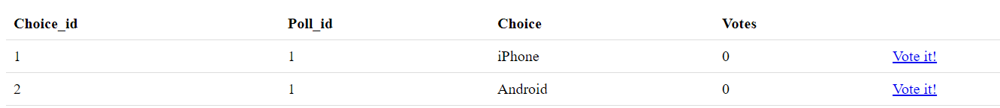

Useful Tip:
Deployment to the Linux platform is similar if not even easier to accomplish. You may also choose PaaS like Heroku or Amazon Elastic Beanstalk for easy web server and MySQL setups.
Here we demo how to connect to a MySQL data source, download PHP code and setup a online poll website similar to the Django Tutorial.
Apply for a new Tabilet account:
For this demo, let's assume your new account has login name of tustin.
After logging in, you should build a database schema by either adding it online or connecting to a remote data source. Let's assume you added a schema online. The database is named as tustin as well.
Two default roles will be created automatically at this point:
To support root login, we have automatically generated two tables tabilet_login_a and tabilet_login_a_tabilet_ip. Click on Database align the left hand menu bar to see them. Now let's add two more tables for polling questions and polling choices.
CREATE TABLE poll_question (
poll_id int NOT NULL AUTO_INCREMENT,
question varchar(255) NOT NULL,
created timestamp,
PRIMARY KEY (poll_id)
);
CREATE TABLE poll_choice (
choice_id int NOT NULL auto_increment,
poll_id int NOT NULL,
choice varchar(255) NOT NULL,
votes int NOT NULL default '0',
PRIMARY KEY (choice_id),
FOREIGN KEY (poll_id) REFERENCES poll_question (poll_id) ON DELETE CASCADE
);
Click on Project on the left menu bar, and Roles and Components will display for this project.
For this Quick Start, we don't need to add any more roles.
Clicking on Components will list all components in this project. It is currently empty but let's add two new components.
For public p in Access Control List
Later, we will show how to override Update by adding 1 to number votes
Note that administrative role a can act on any component for any action, so it is not listed.
The software package for the project is now ready to be generated! Go to Software Package, and click Download.
We can deploy the project locally, in cloud or PaaS. Depending on the web server environment, we should adjust the system configuration accordingly. By default, we assume it is deployed to a local Windows 10 machine at localhost:80.
Deployment to the Linux platform is similar if not even easier to accomplish. You may also choose PaaS like Heroku or Amazon Elastic Beanstalk for easy web server and MySQL setups.
Let's untar the download file, assumed to be C:/django, and check its content:
conf config.json
init.sql
logs debug.log
src choice component.json
filter.php
model.php
question component.json
filter.php
model.php
filter.php
model.php
views a choice delete.html
edit.html
insert.html
startnew.html
topics.html
update.html
question delete.html
edit.html
insert.html
startnew.html
topics.html
update.html
header.html
footer.html
login.html
p choice topics.html
update.html
question edit.html
topics.html
header.html
footer.html
error.html
www a choice edit.vue
startnew.vue
topics.vue
question edit.vue
startnew.vue
topics.vue
footer.vue
header.vue
login.vue
p choice topics.vue
question edit.vue
topics.vue
footer.vue
header.vue
app.html
app.php
genelet.js
index.html
composer.json
We will explain this in more detail in Docs. For now, we only need to make two changes: 1, Modify config.json to match your local system environment; 2, Modify model.php in ./src/choice to reflect the voting counts.
The original config.json looks like:
{
"Document_root" : "/home/user/tabilet/tustin/www",
"Project" : "Tustin",
"Server_url" : "http://tustin.tabilet.com",
"Script" : "/app.php",
"Pubrole" : "p",
"Template" : "/home/user/tabilet/tustin/views",
"Uploaddir" : "/home/user/tabilet/tustin/www/upload",
"Secret" : "ec2673c220f09490b942d178867dead7669528bbc4d651fc6bc8db55781d88b6be5c64f8e212d0e6fc8bd2710c527bf085c5",
"Db" : ["mysql:host=localhost;dbname=tustin", "tustin", "aa7a2e36ef"],
"Log" : {"Filename": "/home/user/tabilet/tustin/logs/debug.log", "Level": "info"},
"Chartags" : {
"html":{"Content_type":"text/html; charset='UTF-8'"},
"json" : {
"Content_type":"application/json; charset='UTF-8'",
"Challenge":"challenge", "Logged":"logged", "Logout":"logout",
"Failed":"failed", "Case":1
}
},
"Roles" : {
"a" : {
"Is_admin" : true,
"Id_name" : "a_id",
"Attributes" : ["a_id", "a_login"],
"Type_id" : 41,
"Surface" : "ta",
"Domain" : "tustin.tabilet.com",
"Duration": 86400,
"Max_age" : 86400,
"Secret" : "d148598d88cd559ba20e838ac392cb09d525e20aeed9b7b0458fca990e53e96ad61a16ca2de53ddb759397b00caeeab1ac30",
"Coding" : "a35644e658d2f4d08bc4bcb595a99a7b5bccf5dbe156fe06013591320450464b5d4cb1ff6cbd41d430c55717d9e54ee3efc2",
"Logout" : "/",
"Issuers" : {
"db" : {
"Default" : true,
"Screen" : 1,
"Credential" : ["login", "passwd", "direct", "ta"],
"Sql": "proc_tustin_a",
"Out_pars": ["a_id", "a_login"]
}
}
}
}
}Since the files are untarred onto C:/django, the document root should be changed to C:/django/www. The other changes are:
We should also add an administrator account. Assumming a LOGIN and PASSWORD, execute this SQL:
INSERT INTO tabilet_login_a (login, passwd, status, created) VALUES ('LOGIN', SHA1(CONCAT('LOGIN', 'PASSWORD')), 'Yes', NOW());
Logins are handled by the stored procedure proc_tustin_a. Passwords are saved as a SHA1 hash in the account table tabilet_login_a. All login attempts are stored in tabilet_login_a_tabilet_ip by IP addresses. If an IP address fails more than 5 times within the last hour, or more than 20 times within the last 24 hours, it will be blocked.
The default activity for update in REST actions is to update a table row with new values. When the public votes for a choice, assuming we have assigned this action to update, we expect vote counts to increase by 1.
We might think to use client-side Javascript to dynamically add 1 before sending it to the server, but this opens a serious security risk that allows client to send arbitrary votes. So instead, it's better to do it on the server-side.
<?php
declare (strict_types = 1);
namespace Tustin\Choice;
use Tustin;
class Model extends \Tustin\Model
{
};
<?php
declare (strict_types = 1);
namespace Tustin\Choice;
use Tustin;
class Model extends \Tustin\Model
{
public function update(...$extra) : ?\Genelet\Gerror {
if ($this->Get_rolename() == "p") {
return $this->Do_sql(
"UPDATE poll_choice SET votes=votes+1 WHERE choice_id=?", $this->ARGS["choice_id"]);
}
return parent::update(...$extra);
}
};
> cd C:/django
> composer install
> composer dump-autoload -o
The website http://localhost is now running. Open it in your browser. Go to the administrative portal
Use LOGIN and PASSWORD which we set up before to login. The page is empty because there is no data.In the URL, change action to startnew
http://localhost/app.php/a/html/question?action=startnew
This will open a starting page for us to input data.Put Do you prefer iPhones or Androids? as the polling Question, and click Submit. We should get a confirmation page that action insert has been successful. You may go back to the topics page to confirm the new polling question.
Note that this question is automatically assigned poll_id=1.
In addition to the 5 standard REST verbs from the top class Genelet, Create (action=insert), Read (action=edit), List (action=topics), Update (action=update) and Delete (action=delete), we have added action=startnew as a landing page with a data input form.
Do the same for question choice. Go to
http://localhost/app.php/a/html/choice?action=startnew
to open a starting page to input question's choices.Go to the topics page of choice, we will see that both the choices are set up correctly.
Remember we have assigned List and Read on all questions, and List and Update on choices to the public? Now, public p can view all questions:
http://localhost/app.php/p/html/question?action=topics
and read one question:
http://localhost/app.php/p/html/question?action=edit&poll_id=1
and view all choices:
How do you allow your audience to vote on the different choices? Go to C:/django/views/p/choice/topics.html and add Vote id!, linked to action=update, to each item:
<tbody>{% for item in topics %}
<tr>
<td>{{ item.choice_id }}</td>
<td>{{ item.poll_id }}</td>
<td>{{ item.choice }}</td>
<td>{{ item.votes }}</td>
<td> <a href="choice?action=update&choice_id={{ item.choice_id }}">Vote it!</a> </td>
</tr>
{% endfor %}</tbody>
So the page
http://localhost/app.php/p/html/choice?action=topics
will look like this:

Now click on Vote it! several times to confirm that vote counts increase as expected.
> List questions:
GET http://localhost/app.php/p/json/question?action=topics
or GET http://localhost/app.php/p/json/question
> Read a question:
GET http://localhost/app.php/p/json/question?action=edit&question_id=ID
or GET http://localhost/app.php/p/json/question/ID
> List choices:
GET http://localhost/app.php/p/json/choice?action=topics
or GET http://localhost/app.php/p/json/choice
> Update (vote) a choice:
POST http://localhost/app.php/p/json/choice {action=update&choice_id=ID}
We have also created an one-page website based on the API and Vuejs. Please follow the links on the front page http://localhost.